Doğançay Waterfall
Physical Accessibility for People with Disabilities: Limited
Access to the waterfall is via steep and narrow dirt trails. The uneven terrain makes it unsuitable for wheelchair users.
Tucked between lush green hills and the shimmering waters of its iconic lake, Sapanca isn't just a destination — it's a feeling. Just a short drive from the hustle of Istanbul, this hidden haven invites you to slow down, breathe deep, and rediscover nature at its finest. Whether you're wandering through forest trails, sipping tea by the lakeside, or chasing the sunset on a mountain peak, Sapanca promises more than a trip — it offers a story worth telling. This is just the surface-dive in.
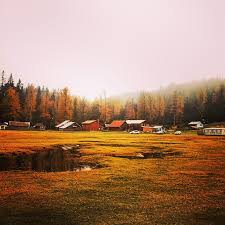
So, what's waiting for you in Sapanca? It's not just about the views though trust us, they're unforgettable. Sapanca is the kind of place where time slows down and simple moments start to matter. A walk by the lake turns into a memory, a village breakfast feels like a feast, and even the air smells fresher somehow. Whether you're coming for a peaceful escape or a weekend full of exploring, there's something here for everyone. You can hike through pine-scented forests, sip tea by the water, chase waterfalls, or just cozy up in a wooden cabin and do absolutely nothing. And the best part? Everything feels close nature, comfort, and a bit of adventure, all wrapped up in one beautiful place. Scroll down to discover what to do, where to eat, and the places that make Sapanca truly special.
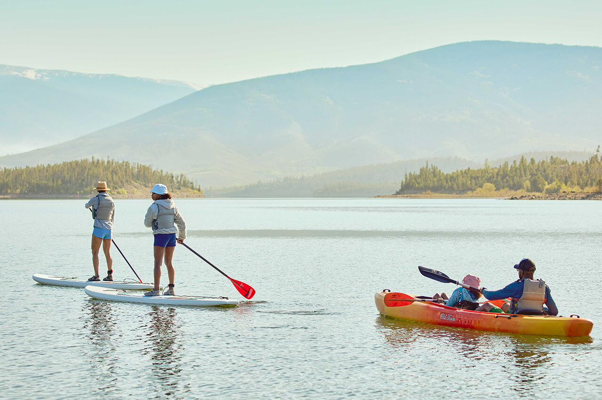
Sapanca is a fantastic destination for anyone who loves water activities, offering the perfect setting for both canoeing and paddle boating. If you want a full upper body workout, canoeing is an excellent choice because it engages your arms and shoulders with every stroke. On the other hand, if you prefer using your legs and want a more relaxed pace, paddle boating is ideal. It allows you to enjoy the calm waters while gently exercising your leg muscles. You can easily rent small boats for peaceful, short rides on the lake. These boats provide a wonderful opportunity to take in the stunning scenery around you—lush green hills, clear blue skies, and tranquil water all around.
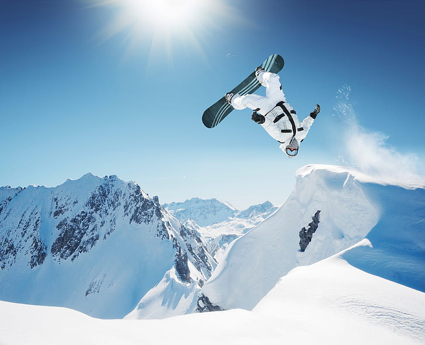
Kartepe is one of the top winter destinations in Turkey for snowboarding. With its wide slopes, natural snow, and breathtaking views of Sapanca Lake and the surrounding forests, it offers the perfect setting for riders of all levels. Whether you're a beginner or an experienced boarder, you’ll find tracks that match your style. You can rent all necessary equipment on-site and take the ski lift to reach higher slopes with ease. The snow season usually runs from December to March, offering fresh powder and thrilling downhill rides. So grab your board, hit the slopes, and enjoy the adrenaline-filled winter experience Kartepe has to offer.
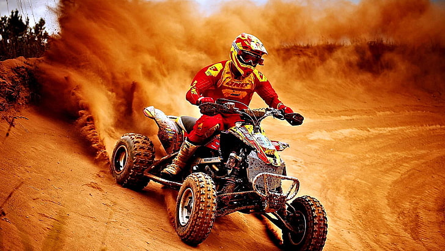
If you're looking for a thrilling way to explore the natural beauty of Kartepe, hop on an ATV and head into the highlands! Both Sultanpınar Plateau and Çiğdem Plateau offer the perfect terrain for off-road rides through pine forests, meadows, and mountain paths. With winding dirt trails, fresh mountain air, and panoramic views, these areas are ideal for an adrenaline-filled yet scenic experience. Whether you're a first-timer or an experienced rider, ATV tours in these plateaus promise excitement with a touch of wild freedom. Guided tours and ATV rentals are available seasonally — a must-do for adventure lovers visiting Kartepe.
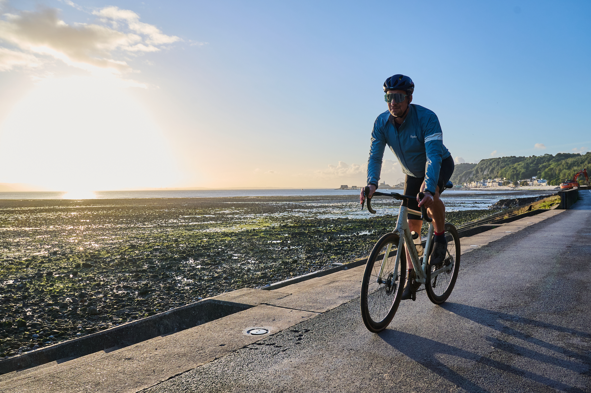
Sapanca Lake offers easy, scenic cycling routes along smooth, paved roads—perfect for beginners and those seeking a relaxing ride with beautiful lake views. For riders looking for a challenge, the forest trails and uphill climbs to Çiğdem Plateau provide an exciting mountain biking experience with rewarding panoramic vistas. Off-road enthusiasts will love the rugged paths around Doğançay Waterfall and Keremali Peak, where you can explore waterfalls, dense forests, and highland plateaus. Whether you prefer calm lakeside paths or adrenaline-pumping mountain trails, Sapanca and Kartepe are top destinations for cycling lovers of all levels.
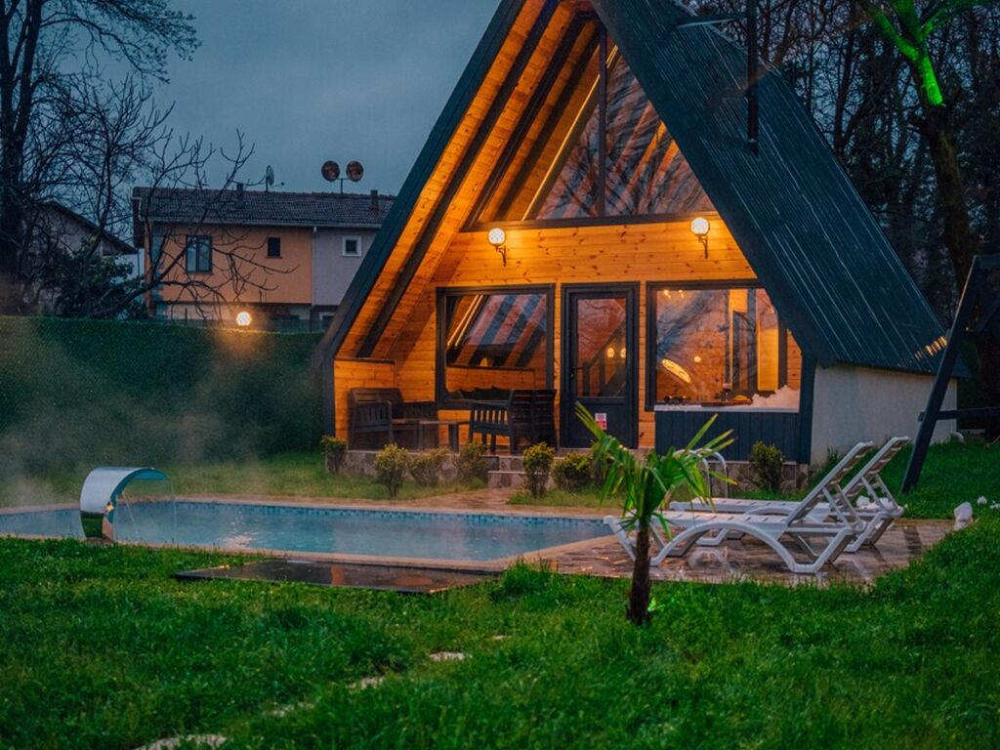
Sapanca Lake is well-known for its charming bungalow accommodations nestled in nature. These cozy cabins, located by the lake or within nearby forests, offer the perfect escape for those seeking peace and comfort away from the city. Wake up to the sound of birds, enjoy a morning hike or bike ride, and relax in your warm bungalow with a fireplace after a day full of outdoor adventures. Combining nature activities with a comfortable stay, Sapanca’s bungalow experience is the ideal way to unwind and recharge.
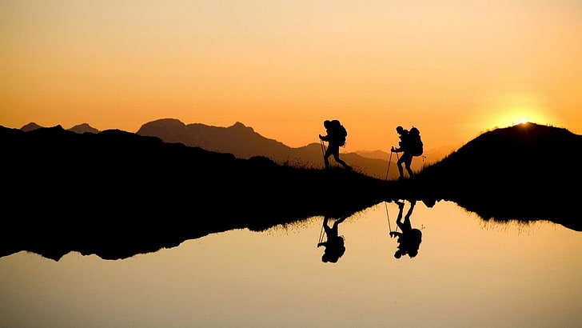
If you're seeking peaceful paths, forest trails, and a deep connection with nature, Sapanca’s highlands offer an unforgettable trekking experience. Doğançay Waterfall, with its serene cascades and lush greenery, is perfect for nature walks filled with the sound of flowing water. Keremali Plateau invites hikers into cooler pine forests and open mountain pastures, offering both challenge and calm. And Sultanpınar Plateau, with its expansive views and winding trails, is ideal for those who want to breathe in pure mountain air while staying active. Whether you're hiking for adventure, photography, or just to clear your mind — these routes promise a refreshing escape into nature.

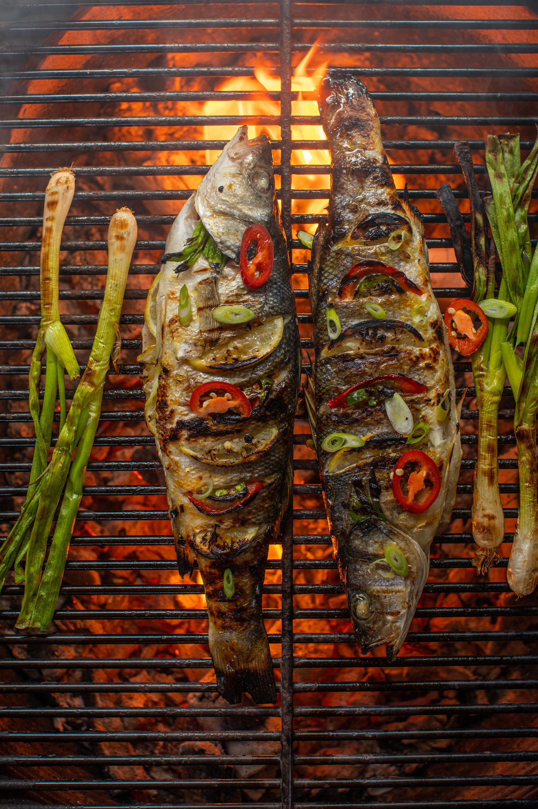
Start Your Day Right in Sapanca: A Culinary Journey Surrounded by Nature
When you think of Sapanca, one thing instantly comes to mind—breakfast!
And not just any breakfast, but a cozy, traditional, village-style feast
that sets the tone for the perfect day. Nestled in nature, Sapanca offers
an experience where simple pleasures take center stage: freshly baked bread,
rich local cheeses, homemade jams, olives straight from the tree, and eggs
cooked just the way you like—all served with endless cups of hot, fragrant
Turkish tea. Even better, this delightful start to your day is also very budget-friendly.
One of the top places to indulge in this authentic breakfast experience is Green Blue
Restaurant.
Surrounded by lush greenery and serenaded by birdsong, this peaceful haven is the perfect
setting to savor a spread of fresh, local flavors. With its scenic views and traditional
offerings, it's no wonder this spot is a favorite for both locals and visitors, especially on
weekends.
But Sapanca's culinary story doesn’t end with breakfast. The region boasts a rich and diverse
food
culture that reflects both its geographical location and its deep-rooted traditions. As the day
unfolds,
you can enjoy an array of local specialties in charming eateries tucked away in the forests,
beside flowing streams,
or overlooking the tranquil lake. Some of the must-try dishes include grilled or oven-baked
fish, golden cornbread,
walnut-stuffed beans, ıslama köfte, and savory pickled green beans.
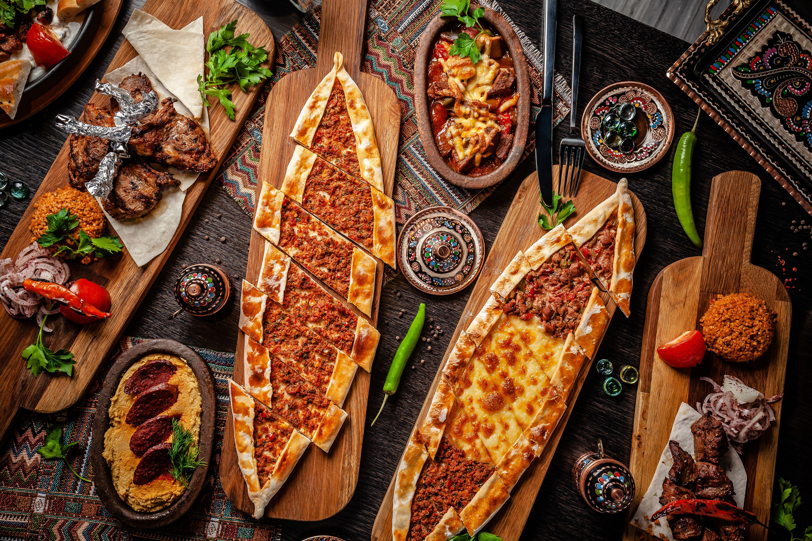
When you think of Sapanca, breakfast comes first! Starting the day with a cozy, traditional village-style breakfast is a must—and it’s budget-friendly too. One of the best places for this experience is Green Blue Restaurant, where you can enjoy fresh local flavors with a peaceful view of nature. Beyond breakfast, Sapanca is also known for its rich local cuisine. You’ll find dishes like grilled or baked fish, corn bread, walnut beans, ıslama köfte, and pickled green beans—served in charming spots surrounded by forests, streams, and mountain air. Some popular places to eat in Sapanca include Naturköy, Sapanca Göl Evi, Gülizar Restaurant, and Sasa Harmanlık, each offering a warm atmosphere and a taste of the region’s culinary traditions.
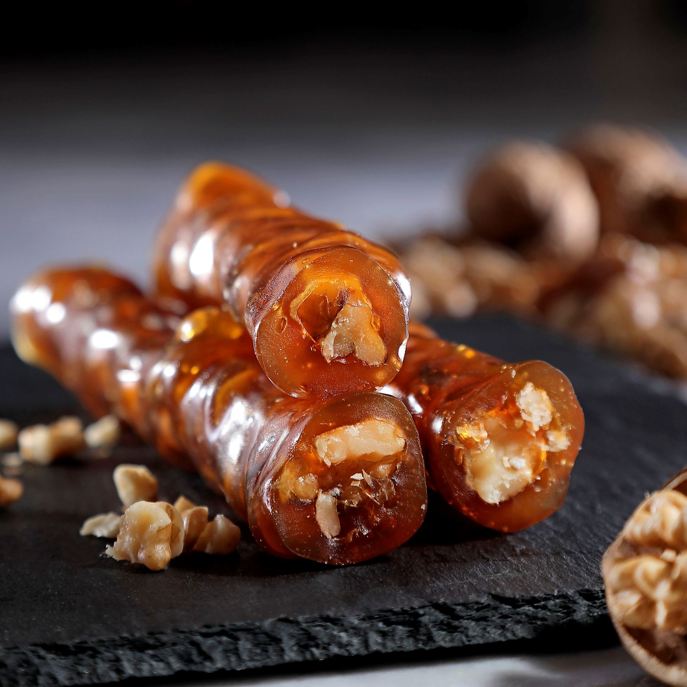
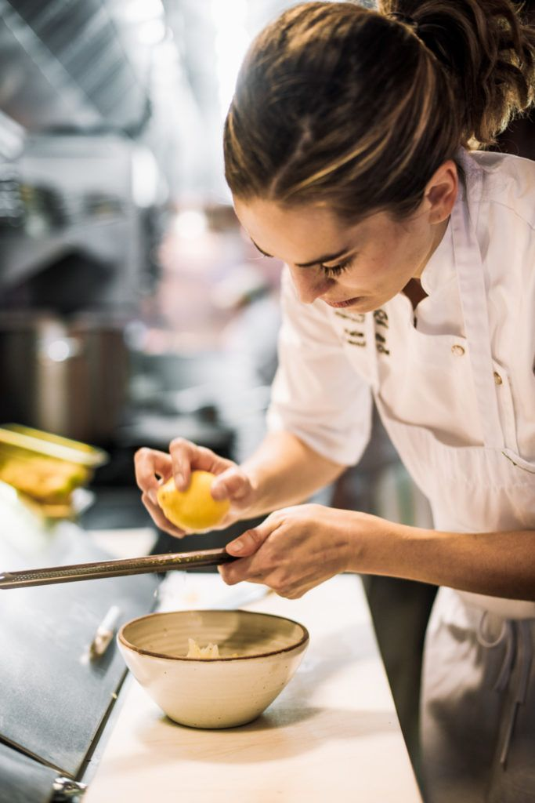
Physical Accessibility for People with Disabilities: Limited
Access to the waterfall is via steep and narrow dirt trails. The uneven terrain makes it unsuitable for wheelchair users.
Physical Accessibility for People with Disabilities: Limited
The roads to the plateau are unpaved and sloped. There are no flat surfaces, making access and movement difficult for wheelchair users.
Physical Accessibility for People with Disabilities: Good
There are ramps and flat walking paths along the lakeside. Some areas are accessible by wheelchair, but natural shoreline sections may pose difficulties.
Physical Accessibility for People with Disabilities: Limited
Access involves forest paths and rugged terrain. The uneven ground is not suitable for wheelchair use.
Physical Accessibility for People with Disabilities: Limited
Reaching the summit requires navigating steep forest trails. It is not accessible for wheelchair users and poses challenges for those with limited mobility.
Physical Accessibility for People with Disabilities: Good
The resort area has ramps and flat paths, allowing wheelchair access to hotels and cafes. However, nature trails and snow-covered areas may be difficult to access.